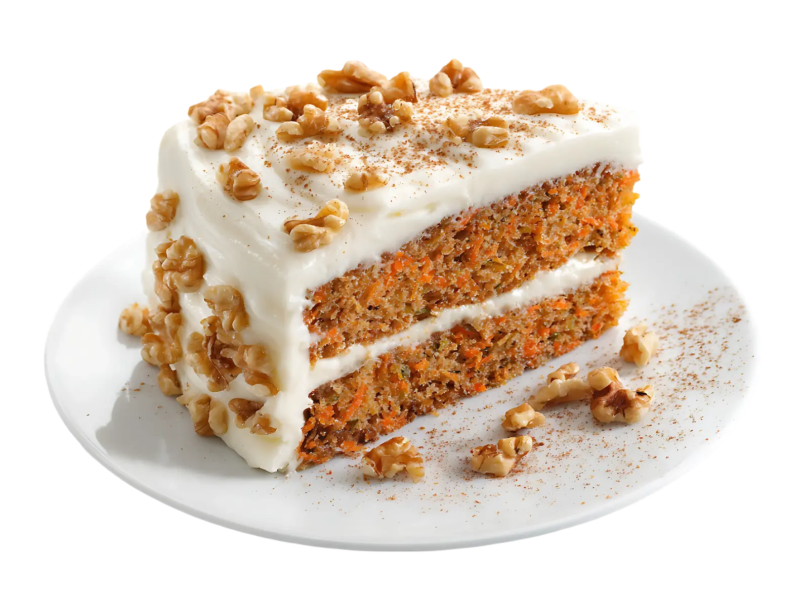

Pastel de Zanahoria
Tiempo: 50 minutos · Dificultad: Intermedia · Porciones: 8 porciones

Preparación
- Precalienta el horno a 175°C (350°F) y enharina un molde para pastel redondo.
- En un tazón grande, bate los huevos junto con los azúcares y el aceite vegetal hasta integrar uniformemente.
- Tamiza la harina, el polvo de hornear, el bicarbonato, la canela, la nuez moscada y la sal e incorpóralos a la mezcla líquida.
- Añade la zanahoria rallada y las nueces picadas con una espátula mediante movimientos envolventes.
- Vierte la preparación en el molde y hornea de 35 a 40 minutos o hasta que un palillo introducido en el centro salga limpio.
- Para la cobertura, bate el queso crema suavizado con el azúcar glass hasta lograr una crema lisa.
- Una vez que el pastel esté completamente frío, cúbrelo generosamente con el betún de queso crema y decora con nueces picadas por encima.
¡Húmedo, especiado y con una cobertura suave e irresistible!
Tips de nuestra comunidad
Descubre recetas, combinaciones y secretos compartidos por otros amantes de la cocina. ¿Tienes un secreto de cocina?
Compártelo con la comunidad.
Ralla la zanahoria por el lado más fino del rallador para que se integre perfectamente con la masa sin dejar trozos duros.
Agrega un puñado de piña en almíbar triturada a la masa si quieres que quede el doble de jugoso.